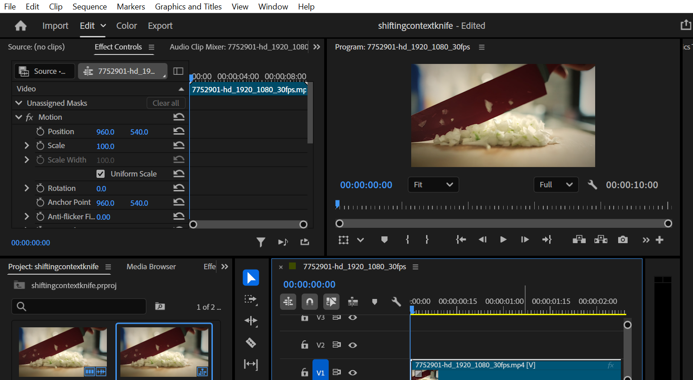
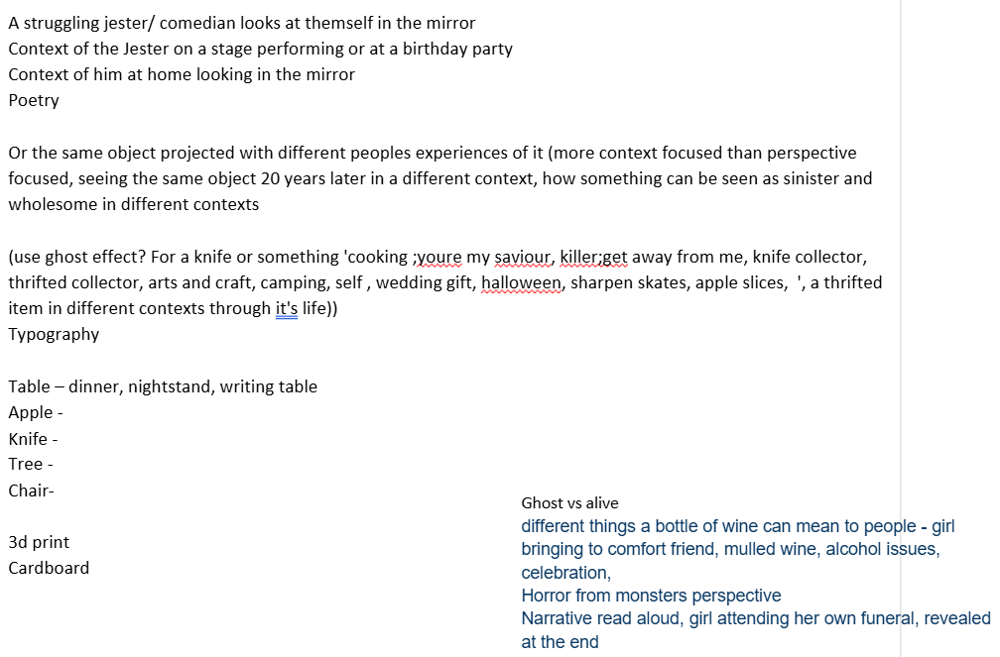
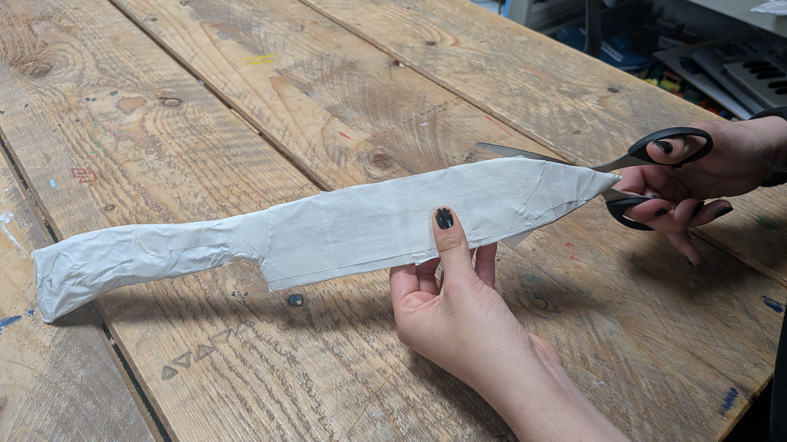
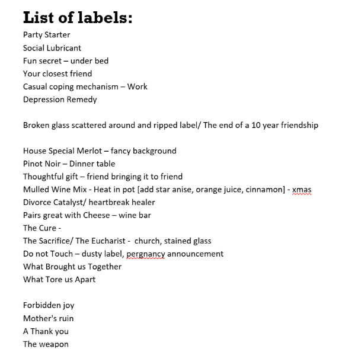
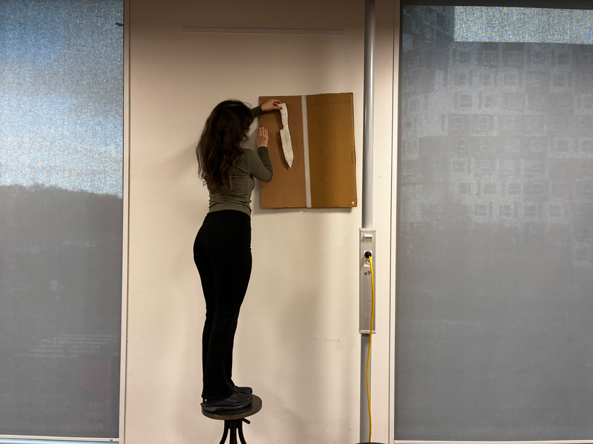
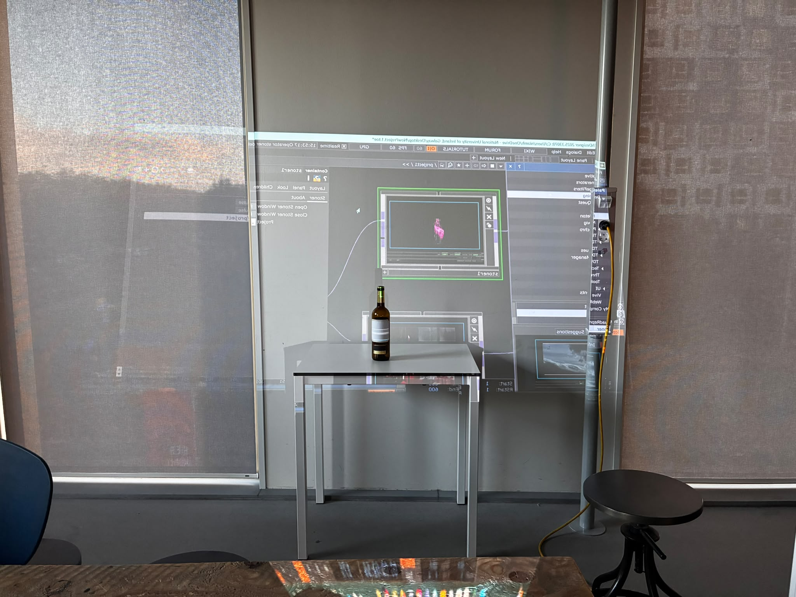
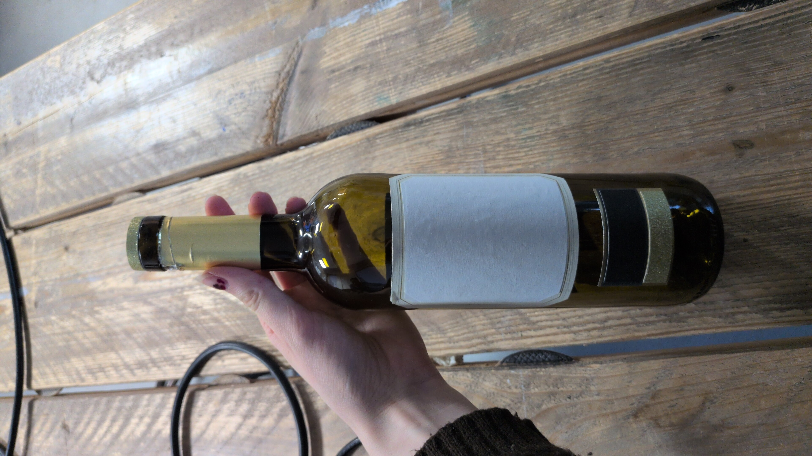
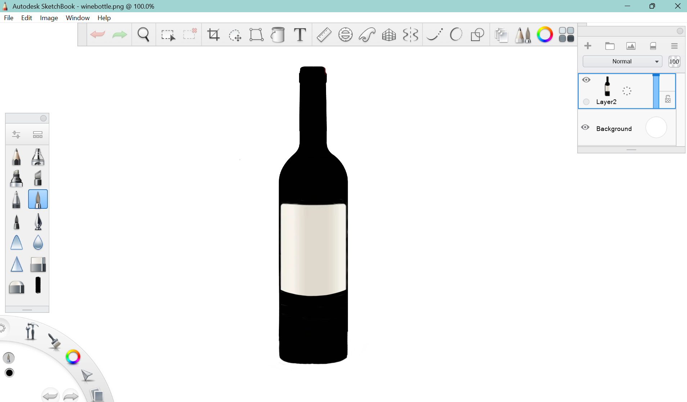

Projection mapping
Shifting Context
Projection mapping that shifts how a space is perceived.
Description
This project concept captivated me. The way I interpreted the theme of "Shifting Context" was to mean something remaining constant, while the placement or situation it is placed in changes the subjective meaning of it, and how people interpret it. The way I wanted to execute this concept was through the use of a single object, and a shifting background and situation. A physical wine bottle is used as a focal point, and the background audio and visuals provide the supplementary context in which the wine bottle is placed. A real wine bottle is used, which I used crafting materials to alter to be anonymised. A blank canvas for the projection of different titles of the wine. The title of the wine bottle changes to suit what it is used for in each scenario.
Motivation
As a sentimental and deeply emotional person, I like to think about things from different people's perspectives and experience life through not only myself, but also through the people around me. That's why when I look at certain things, I wonder how different people might perceive them, or how the same person might interpret the same thing completely differently depending on the situation or given context it is in. I wanted to explore this idea further.
Design process
The project ideas went through several different stages before landing on the final option. Inspiration hit me as I walked around on Halloween, seeing peoples costumes with different accessories, in particular a realistic rubber knife. It looked rather unsettling when wielded by a clown in a threatening way at night! That's when I began to think of it used for cooking, for creating art, and I began to wonder if it could be an interesting item to focus on for this project. My project partner and I decided to try it, and she created a fake, white knife that we could project different contexts onto. I put together a prototype video to explore our idea. However, even when using videos that were at the correct angle to appear as if they were in the knife, or holding the knife, the message was not being delivered effectively enough. It also did not look very aesthetically pleasing.
I thought about some versatile objects that could hold significant emotional weight, and eventually landed on a bottle of wine. Wine is very symbolic in many contexts and it's prescence holds different connotations in each of them. I brain-stormed different label ideas, and you can see my original notes and ideas in the Development section down below! I narrowed down the list and asked my project partner for feedback on it, and she suggested I change one of them. In the scene with a background showing a baby shower, the original label I thought of was "Do Not Touch", as a reference to the person carrying the child being advised to avoid alcohol during pregnancy. She felt it was slightly vague and unclear. We decided to change it to "I can't drink this, but you can!", a label seen on some beverages for baby showers that are specifically for the guests.
My project partner and I collaborated to test out the video. She set up the projector as I created a projection map in Touch Designer that matched the shape of the bottle I designed for the video. We tested ways to demonstrate the audio, and we found that using headphones was more immersive than using a small speaker, so we decided to keep that method in our final project. We encountered issues in our set-up, such as finding the correct distance and proportions for the text on the wine bottle, and making sure that the background didn't overlap on the label of the physical bottle. After testing out several angles to project and align the digital label onto the physical bottle, we found success.
Prototypes

Feedback
Reflection
I often find group work challenging, as different people have separate priorities and work ethics. As a result of this project, I recognise the need to agree a deadline for everyone's delegated tasks early on, and be firmer about them. This project has also highlighted the importance of multiple iterations and prototypes to me in order to land on the best option, and to separate your work from yourself. This project helped me to create distance between myself and what I create, in order to get feedback to its most effective degree.
Development Pictures & Videos






